Gum-mouth bird, round 3: round body, big eyes, true swing
Round 3 next to the in-game Sootling
Left two: in-game idle and flap. Then round 3 rest, inhale, puff, blast, swing right 1 and 2, swing left 1 and 2.

Round 1 take B, round 2 and round 3 side by side
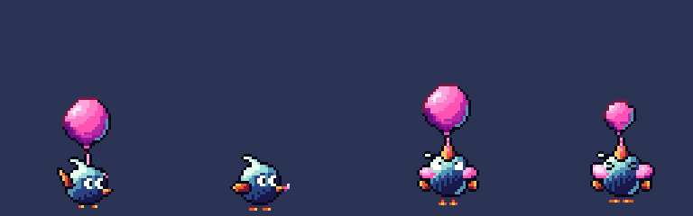
Round 1, take B (front dangle, with stalk) Round 2 (tall body, small eyes)
Round 2 (tall body, small eyes)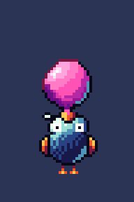
Round 2 fly Round 3 fly
Round 3 fly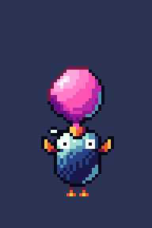
Round 2 flap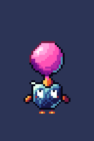
Round 3 flapRound 3 in motion
 IdleFly
IdleFly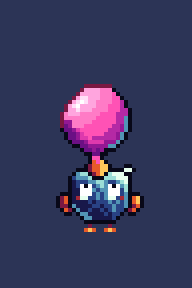
Fly, mirrored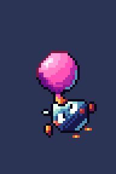
Settle after moving right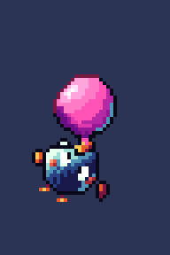
Settle after moving leftFlap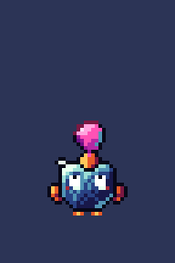
LandingOther palettes
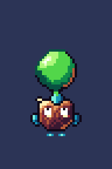
Computer player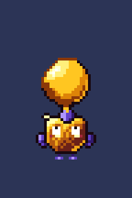
Player 2Distress stages 1 to 3
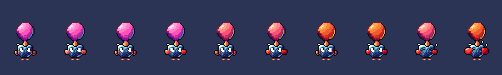
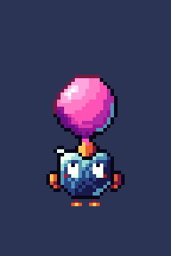
Stage 1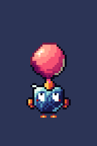
Stage 2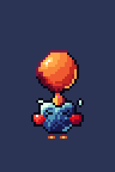
Stage 3Frame strips
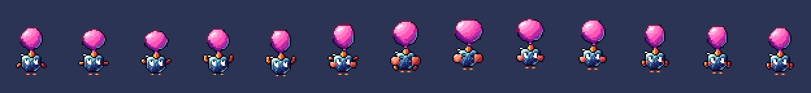
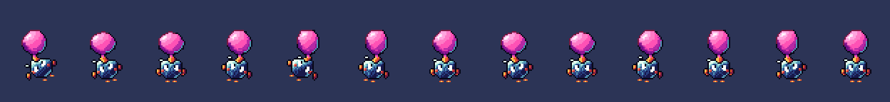
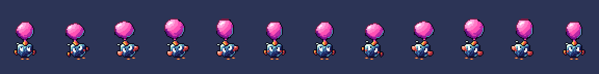
All 21 typed frames
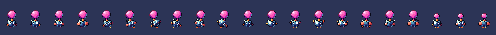